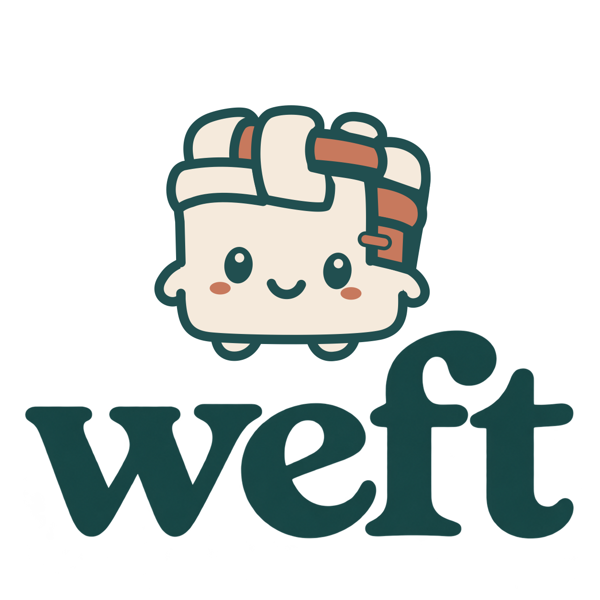

From a recorded motion
to a world you can control.
A real rolling-ball video becomes a tracked object graph and a bounded, interactive simulator. A fixed evaluator checks parameter repairs; a tabular RL agent learns a separate parking task.
Replay errors are development-validation pixels. RL success is simulation-only on new initial states, not real-world transfer.
Recorded motion, reconstructed dynamics
Left: recorded frames. Center: initial model. Right: selected model. Red crosses show measured centers. The gap between passes is omitted. Slowed GIF fallback · Unmodified source video

Change the action
Use left/right arrows or the controls to push or brake. Bring the ball into the marked target with low speed. These forces and this goal are task extensions, not actions recovered from the video.
One unit equals the source image width. Scale, mass, and force calibration are not recovered. Simulation pauses when this page is hidden.
Independent checks
| Policy | Successes / trials | Success rate |
|---|
All policies use the same evaluation initial-state seeds. The learned policy receives no expert actions. Success is checked from final position and speed, not accumulated reward.